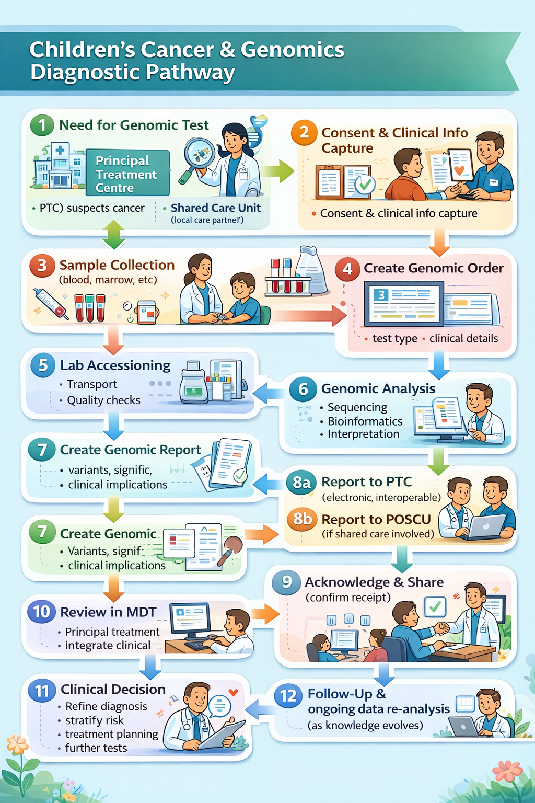
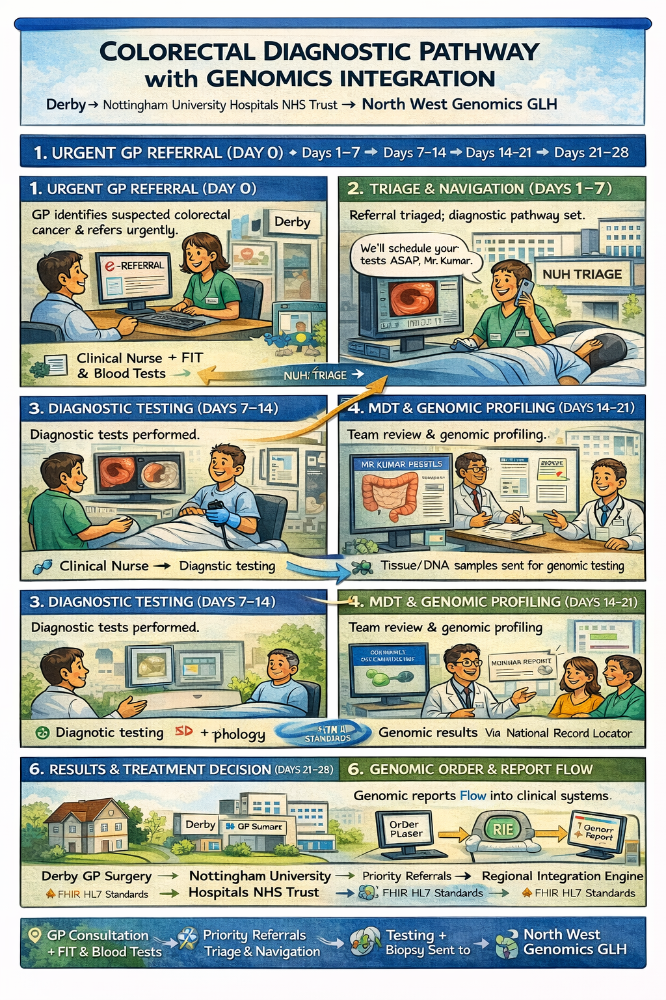
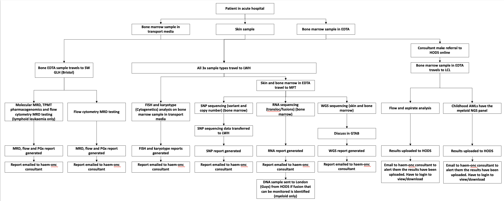

NHS North West Genomics
0.2.2 - ci-build

NHS North West Genomics
0.2.2 - ci-build

NHS North West Genomics, published by NHS North West Genomics. This guide is not an authorized publication; it is the continuous build for version 0.2.2 built by the FHIR (HL7® FHIR® Standard) CI Build. This version is based on the current content of https://github.com/nw-gmsa/nw-gmsa.github.com/ and changes regularly. See the Directory of published versions
This guide is to support Genomic Testing Workflow at a regional level and is designed to be compatible with:
The general workflow is based on IHE LTW profiles and HL7 v2 OML and ORU.
Genomic Testing Workflow is part of Diagnostic Testing, which is also part of the general clinical process.
graph TD;
A[Assessment]-->|Creates Observations| B;
A--> |Needs Diagnostic Testing and Completes| T;
B[Diagnosis]-->|Creates Condition| C;
T[<b>Order Placer</b><br/>Genomics Test Order]--> |"Sends Laboratory Order<br/>LAB-1 FHIR Message O21"| AN;
T --> |Asks for| S
S[Specimen Collection] --> |Sends Specimen| AN;
AN["<b>Order Filler</b><br/>Diagnostic Testing"] --> |"Requests further tests <br/>(reflex order)"| T;
AN --> |Sends Laboratory Report<br/>LAB-3 HL7 v2 ORU_R01| A;
C[Plan]-->|Creates Goals and Tasks| D;
D[Implement/Interventions]-->|Actions Tasks| E;
E[Evaluate]--> |Reviews Care| A;
click T Questionnaire-GenomicTestOrder.html
click AN Questionnaire-GenomicTestReport.html
click S ExampleScenario-BiopsyProcedure.html
classDef purple fill:#E1D5E7;
classDef yellow fill:#FFF2CC;
classDef pink fill:#F8CECC
classDef green fill:#D5E8D4;
classDef blue fill:#DAE8FC;
classDef orange fill:#FFE6CC;
class A pink
class B yellow
class C green
class D blue
class E orange
class O,S,T,AN purple
Genomic diagnostic testing follows the same standardized process defined by the IHE Laboratory Testing Workflow used in traditional laboratory testing. This workflow has been enhanced to support the sharing of laboratory reports (documents) through Integrated Care Systems (ICS). In addition, a new mechanism for sharing laboratory reports has been introduced to establish a regional genomic data repository.

Ref: NHS Impact - Best Practice Timed Diagnostic Cancer pathways

(Based on the 28-day Faster Diagnosis Standard and best practice principles summarised in the GIRFT 2024 guide.)
Goal: Enable straight to test routing where possible.
Goal: Efficient prioritisation and sequencing to support rapid diagnostics and minimise wasted clinic waits.
Goal: Complete key diagnostic investigations early in pathway to support 28-day standard.
Goal: Early integration of genomics into treatment planning where indicated.
graph TD;
subgraph NHSTrust[NHS Trust]
T[<b>Order Placer</b><br/>EPR]--> |"1a. Sends Laboratory Order<br>LAB-1 HL7v2 ORM_O01/OML_O21"| TIE;
TIE[Trust Integration Engine]
TIE--> |4c. Sends Laboratory Report<br/>LAB-3 HL7 v2 ORU_R01| T;
end
TIE --> |"1b. Sends Laboratory Order<br>LAB-1 FHIR Message O21"| RIE;
T --> |2. Asks for| S
S[Specimen Collection] --> |3. Sends Specimen| AN;
subgraph NWGenomics[North West Genomics]
RIE --> |"1c. Sends Laboratory Order<br>LAB-1 HL7 v2 OML_O21"| AN;
AN["<b>Order Filler</b><br/>Diagnostic Testing<br/>LIMS iGene"] --> |4a. Sends Laboratory Report<br/>LAB-3 HL7 v2 ORU_R01| RIE;
RIE[Regional Orchestration Engine] --> |4b. Sends Laboratory Report<br/>LAB-3 HL7 v2 ORU_R01| TIE;
end
click T Questionnaire-GenomicTestOrder.html
click AN Questionnaire-GenomicTestReport.html
click S ExampleScenario-BiopsyProcedure.html
classDef purple fill:#E1D5E7;
classDef yellow fill:#FFF2CC;
classDef pink fill:#F8CECC
classDef green fill:#D5E8D4;
classDef blue fill:#DAE8FC;
classDef orange fill:#FFE6CC;
class A pink
class B yellow
class C green
class D blue
class E orange
class O,S,T,AN purple
graph TD
subgraph Trust[NHS Trust]
EPR[<b>Order Placer</b><br/>EPR]
TIE[Trust Integration Engine]
end
HODS["<b>Order Filler</b><br/>HODS<br/><b>Order Placer</b>"]
EPR --> |"1. Create Laboratory Order<br/>Manual entry"| HODS
HODS --> |"2. Send Laboratory Order (Immunology and/or Genomics) + Specimen<br/>"| MFTReception[Specimen Reception]
MFTReception --> |"3a. (Manual) Immunology Laboratory Order + Specimen"| LIMS["<b>Order Filler</b><br/>Immunology LIMS"]
subgraph Laboratory["Laboratory at NHS Trust"]
LIMS --> |3b. Send Laboratory Report<br/>HL7 v2 ORU_R01| LIE[Laboratory<br/>Trust Integration Engine]
end
LIE --> |3c. Send Laboratory Report<br/>HL7 v2 ORU_R01| HODS
RIE --> |4d. Send Laboratory Report<br/>HL7 v2 ORU_R01| HODS
MFTReception --> |"4a. Genomics Laboratory Order <br/> Specimen most often entered into iGene"| TestType
subgraph NWGenomics[North West Genomics]
RIE["Regional Orchestration Engine"]
TestType[Test Distribution<br/>By Test Type to a LIMS] --> |4b. Tests A, B, C, etc| GLH
GLH["<b>Order Filler</b><br/>LIMS Shire/iGene/StarLims"]
GLH --> |4c. Send Laboratory Report<br/>HL7 v2 ORU_R01| RIE
end
HODS --> |5. Write Consolidated Report| HODS
HODS --> |"6. Send Consolidated Laboratory Report<br/>Email or HL7 ORU_R01"| TIE
TIE --> |Laboratory Report| EPR
classDef purple fill:#E1D5E7;
class EPR,HODS,GLH,LIMS purple
For information purposes only. This is a more detailed breakdown of the Genomic Tests are distributed.

HODS Genomic Tests - Mersey and Cheshire GLH
This relates to points 4a->4d in the diagram above.
graph LR
IGene[iGene] --> |"1. (New HL7 v2 OML_O21 feed from iGene)"| RIE[Regional Orchestration Engine]
RIE --> |"2. Stores a copies of orders"| CDR[Genomic Data Repository]
StarLimsMiddleware["StarLims Middleware <br/>(May be RIE)"] --> |"3. Polls for (starlims) orders from CDR (FHIR RESTful)"| CDR
StarLimsMiddleware --> |"4. Stores starlims order"| StarLims
StarLimsMiddleware --> |"5. Gets Reports (poll?)"| StarLims
StarLimsMiddleware --> |"6. Stores report"| CDR
RIE --> |"7. Gets Reports (poll?)"| CDR
RIE --> |"8. Distributes Reports (HL7 v2 ORU_R01)"| HODS[HODS etc]
classDef purple fill:#E1D5E7;
class OrderPlacer,OrderFiller purple
This infers automated order distribution between LIMS. This has questions around genomic specimen management, if the specimen management for genomics is going to be iGene, then orders to others LIMS are more accurately described as subcontracted orders.
The RIE routes orders to a master LIMS (assumed to be iGene), which then subcontracts them to the other LIMS.
See also Inter Laboratory Workflow (ILW)
graph TD;
subgraph NHSTrustA[NHS Trust]
EPRA[<b>Order Placer</b>] --> |Asks For| SpecimenA[Sample Collection]
EPRA --> |1a. Laboratory Order| TIE[Trust Integration Engine]
end
SpecimenA --> |2 Send Specimen| LIMSA
TIE --> |1b. Laboratory Order<br/>LAB-1| RIE
subgraph NWGenomics[NW Genomics]
RIE --> |1c. Laboratory Order<br/>LAB-1| LIMSA[<b>Order Filler</b><br/>LIMS iGene]
LIMSA --> |1d. Subcontracted Laboratory Order<br/>LAB-35| LIMSB[<b>Order Filler</b><br/>LIMS Starlims]
LIMSA --> |1d. Subcontracted Laboratory Order<br/>LAB-35| LIMSC[<b>Order Filler</b><br/>LIMS Shire]
LIMSA --> |4a. Laboratory Report| RIE[Regional Orchestration Engine]
LIMSB --> |4a. Laboratory Report| RIE
LIMSC --> |4a. Laboratory Report| RIE
end
RIE --> |4b. Laboratory Report| TIE
TIE --> |4c. Laboratory Report| EPRA
classDef purple fill:#E1D5E7;
class EPRA,SpecimenA,LIMSA,LIMSB,LIMSC purple;
graph TD;
subgraph NHSTrust[NHS Trust]
Practitioner[fas:fa-user-md Practitioner] --> |1. Selects Order Form| FormManager
FormManager --> OrderEntry
Practitioner --> |3. Completes| OrderEntry[Order Form]
EPR[<b>Order Placer</b><br/>fas:fa-database Electronic Patient Record] --> |2. Pre Populates with existing data| OrderEntry
OrderEntry --> |4. Submits Order| EPR
Practitioner --> |6. Asks for|Sample[Sample Collection]
end
EPR --> |5. Sends Laboratory Order<br/>LAB-1 HL7 FHIR Message O21| DiagnosticTesting[<b>Order Filler</b><br/>fas:fa-stethoscope Diagnostic Testing]
Sample --> DiagnosticTesting
For more details see:
graph TD;
Sample[Sample Collection] --> EXT
Order --> EXT
subgraph OrderFiller[<b>Order Filler</b> North West Genomics]
EXT[DNA Extraction] --> SEQ[DNA Sequencing]
SEQ --> AN[Mapping & Analysis]
AN --> INT[Interpretation]
end
INT --> |Send Laboratory Report<br/>LAB-3 HL7 v2 ORU_R01| Practitioner[<b>Order Placer</b><br/>EPR]
For more details see:
For illustration purposes only, see Inter Laboratory Workflow
For illustration purposes only, see Specimen Event Tracking
IG © 2024+ NHS North West Genomics. Package fhir.nwgenomics.nhs.uk#0.2.2 based on FHIR 4.0.1. Generated 2026-04-10
Links: Table of Contents |
QA Report
| New Issue | Issues
Version History |
 |
Propose a change
|
Propose a change